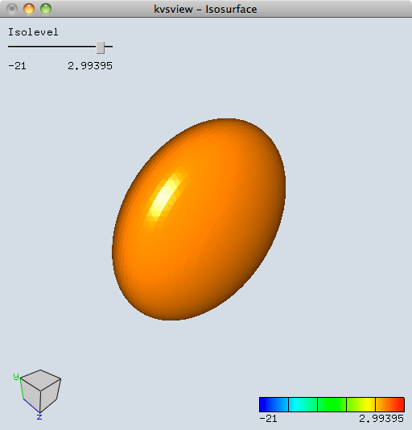

例 構造型ボリュームデータ
関数値：
f(x, y, z) = 3 - x2 - y2 - 4z2
をフィールド値にもつ構造型ボリュームデータを作成し，AVS Fieldファイルとして出力します．
KVSで定義されている構造型ボリュームデータ（StructuredVolumeObject）クラスは
メンバ変数として
- グリッド数（kvs::Vector3ui），
- グリッドタイプ（enum型 ｛Uniform, Rectilinear, Curvilinear, Irregular} ），
- 各要素のデータ数（size_t），
- フィールドデータ（kvs::AnyValueArray），
- グリッド座標（kvs::ValueArray<float>）
をもちます．
ここでは，特にkvs::ValueArray クラスのフィールドデータの登録の仕方について説明します．
1. 作業ディレクトリの作成
作業ディレクトリに「CreateField」というディレクトリを作成して，移動して下さい．
$ mkdir CreateField
$ cd CreateField
2. main.ccp の作成
「main.cpp」というファイルを作成して下さい．
関数値評価のためにインライン関数を作成します．
inline float func( float x, float y, float z ) {
return ( 3.0 - x*x - y*y - 4.0*z*z );
}
int main( void )
{
return ( 0 );
}
3. データ生成の準備
構造型ボリュームデータのグリッド数をunsigned int型の3次元ベクトルとして宣言します．
ここでは，データのグリッド数はdim1 = dim2 = dim3 = 64 とします．
kvs::UInt32 gridNum = 64;
const kvs::Vector3ui resol(gridNum, gridNum, gridNum);
フィールドデータはkvs::ValueArray クラスを使ってデータを登録し，kvs::AnyValueArray型 に渡します．
kvs::ValueArray クラスはインスタンス生成時にメモリの割り当てを行い，
- データサイズ
- データを格納する動的配列
をメンバにもっています．
ここでは64×64×64のfloat型データとしてメモリを確保します．
kvs::ValueArray<float> data( gridNum * gridNum * gridNum );
4. データの格納
kvs::AnyValueArray クラスではフィールドデータを直接配列に格納することはできません．
代わりに，データへのポインタを使って操作します．
float* pdata = data.data();
x, y, zの定義域を[-2, 2]として，グリッドサイズが各々64となる格子点上で関数値を評価します．
評価した関数値はpdata を使って値を格納していきます．
float min = -2.0, max = 2.0;
float dt = (float)(max - min)/(float)(gridNum-1);
kvs::UInt64 index = 0;
for(int k=0; k<gridNum; k++) {
for(int j = 0; j<gridNum; j++) {
for(int i=0; i< gridNum; i++) {
float x = (float)min + (float)i*dt;
float y = (float)min + (float)j*dt;
float z = (float)min + (float)k*dt;
// 関数値を評価してdataへ格納
pdata[ index++ ] = func(x, y, z) ;
}
}
}
5. 構造型ボリュームデータ（StructuredVolumeObject）の作成
構造型ボリュームデータ（StructuredVolumeObject）を作成します．
ここでは，kvs:: StructuredVolumeObjectのインスタンスを生成し，データをセットします．
最低限必要なデータは以下の 4 種類です．
- グリッドタイプ（enum型｛Uniform, Rectilinear, Curvilinear, Irregular}）
- グリッドサイズ（kvs::Vector3ui）
- 各要素のデータ数（size_t）
- フィールドデータ値（kvs::AnyValueArray）
です．
size_t veclen = 1; // 各要素のデータ数の設定
kvs::StructuredVolumeObject *volume =
new kvs::StructuredVolumeObject ( );
// データのセット
volume->setGridType( kvs::StructuredVolumeObject::Uniform ); // グリッドタイプ
volume->setResolution( resol ); // グリッドサイズ
volume->setVeclen( vecren ); // 各要素のデータ数
volume->setValues( data ); // フィールドデータ
6. ファイルへのエクスポート
構造型ボリュームデータをAVS Fieldファイルへエクスポートします．
AVSFieldファイルへエクスポートするためにkvs::StructuredVolumeExporterクラスを使用し，
kvs::AVSFieldクラスのインスタンスを作成します．
kvs::StructuredVolumeExporterはファイルフォーマットタイプ（ここでは，kvs::AVSField）を指定し，
引数にkvs::StructuredVolumeObjectを渡します．
kvs::AVSField* field =
new kvs::StructuredVolumeExporter<kvs::AVSField>( volume );
if( !field ) { // エクスポートできたかチェックする
std::cout << "Cannot export Resized volume data." <<std::endl;
delete volume;
return (false);
}
ファイルフォーマットを定義したクラスにはファイル出力のためのメソッドwrite()が定義されています．
ファイル名は引数として渡します．
if ( !field->write( "test.fld" ) ) { // ファイル書き込みができたかチェックする
std::cout << "Cannot write to the file as AVS field format." << std::endl;
delete volume;
return( false );
}
出力できるファイルフォーマットタイプとしては他に，
KVS独自のファイル形式KVSML(kvs::KVSMLObjectStructuredVolume)を指定することができます．
7. ヘッダファイル
使用したKVSクラスをインクルードします．
ここでは，
- kvs::Vector3ui
- kvs::StructuredVolumeObject
- kvs::StructuredVolumeExporter
- kvs::AVSField
を使いました．
#include <kvs/Vector3>
#include <kvs/StructuredVolumeObject>
#include <kvs/StructuredVolumeExporter>
#include <kvs/AVSField>
8. まとめ
以上をまとめたプログラムはこちら： CreateField.tgz
9. コンパイルと実行
作成したプログラムをコンパイル，実行してみましょう．
KVSプログラムをコンパイルするためにはkvsmakeコマンドを用いてMakefileを作成すると簡単にコンパイルを行うことができます．
$ kvsmake -G <-- Makefile の作成
$ kvsmake <-- コンパイル
エラーなくコンパイルできたら，実行してみましょう．
実行すると，『test.fld』というファイルが作成できます．
$ ./CreateField
$ ls
CreateField Makefile.kvs main.cpp test.fld
どのような データが作成されたのか確認するため，
KVSコマンドアプリケーションkvsviewを使って零等値面を描画して確かめてみましょう．
$ kvsview -Isosurface -l 0 test.fld <--- ボリュームデータ零等値面を描画する

作成したボリュームデータの零等値面描画
問題 KVSML形式のボリュームデータを作成しよう
関数値：
f(x, y, z) = 1 - x2 - ( y - |x| )2 - z4
をフィールド値にもつ構造型ボリュームデータを作成し，KVSMLファイルとして出力しよう．
ただし，gridNum は標準入力するようにすること．
（ヒント）
Export する際にtemplate 型を <kvs::kvs::KVSMLStructuredVolumeObject>で指定します．
kvs::kvs::KVSMLStructuredVolumeObject* field =
new kvs::StructuredVolumeExporter<kvs::KVSMLStructuredVolumeObject>(volume);
また，KVSMLファイル形式の拡張子は「.kvsml」です．
Modefied at July 9, 2014
at April 21, 2017